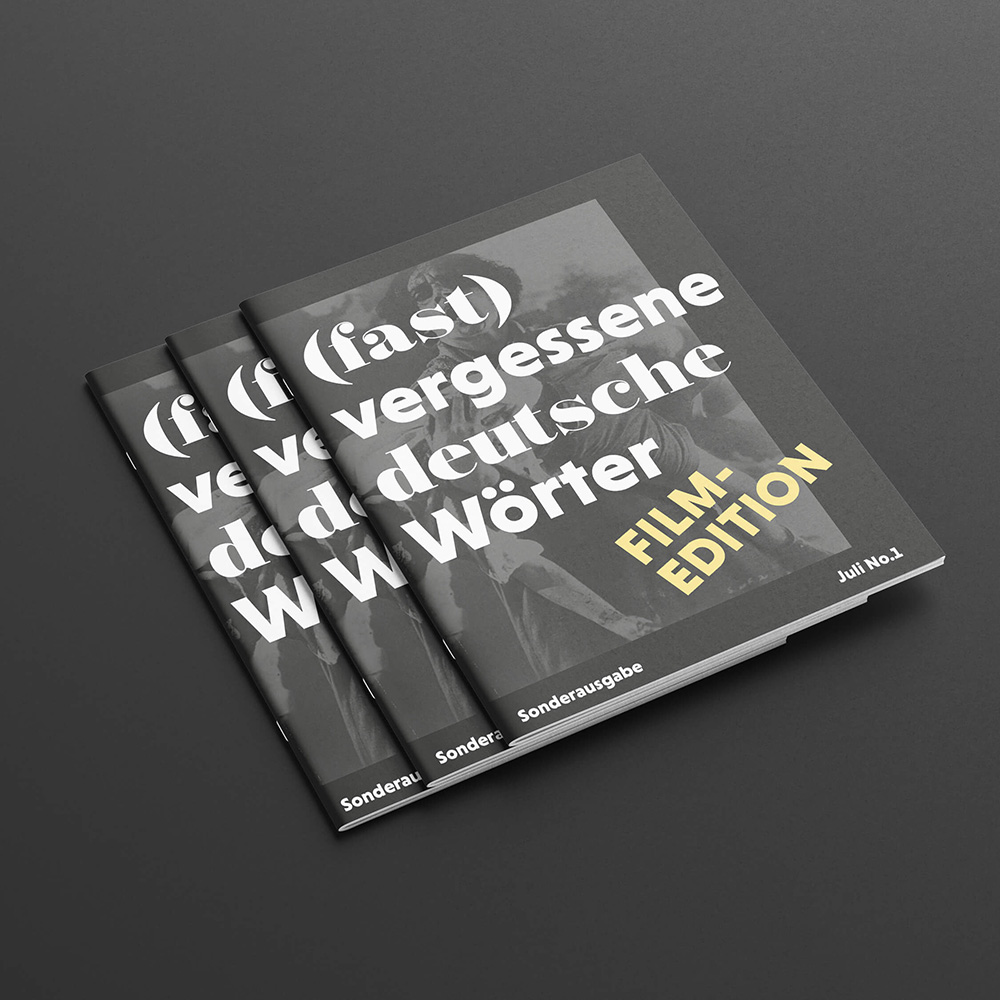
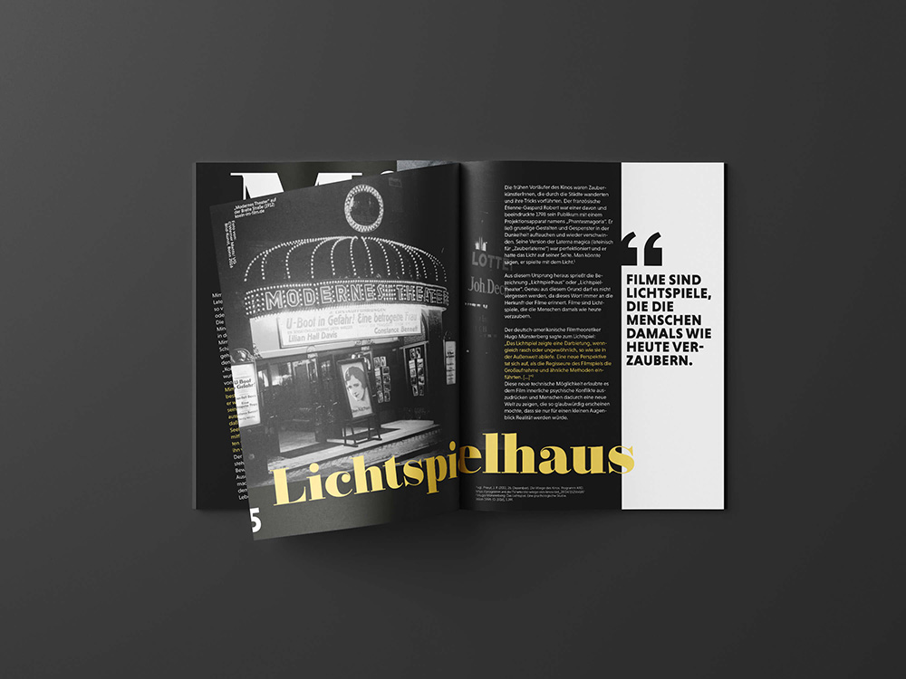
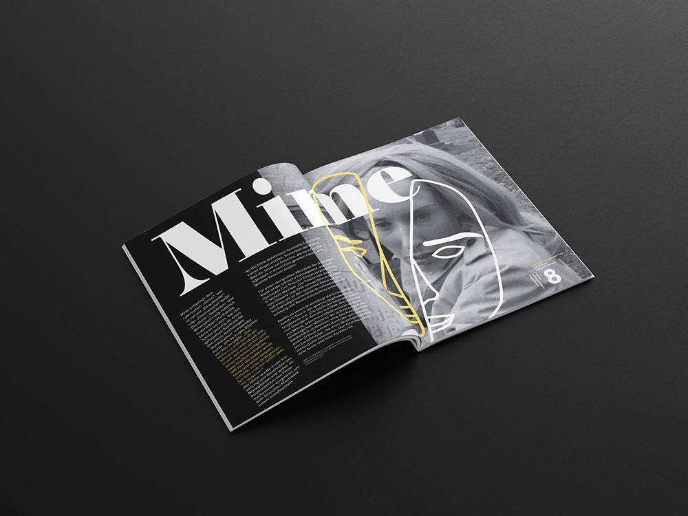
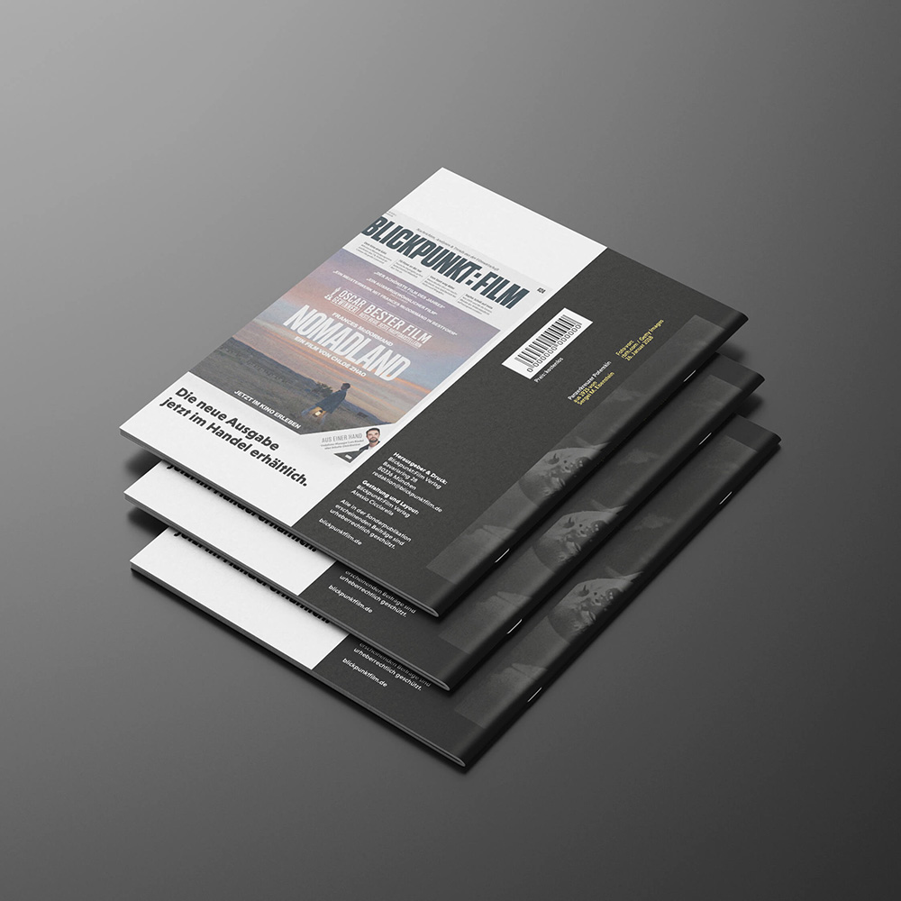

When we talk about (almost) forgotten German words, we should be aware that in lexicology, such words are referred to as »archaisms« and are often used as stylistic devices in rhetoric. The term archaism was Latinized from the ancient Greek and means something like »former« or »old«. These are words whose frequency of use is decreasing. This can have internal or external reasons. In the first case, a word is replaced by a more modern, new-sounding term, whereas in the second case, the object that the word describes is disappearing from our everyday lives. Like celluloid, for example.
Unfortunately, films can also become »archaic« in a figurative sense. In »The Cabinet of Dr. Caligari« from 1919, Robert Wiene creates one of the most influential films of all time and depicts the suffering and horror of the First World War in an expressionist manner. But who still talks about it? Which major streaming service offers this film in its program to introduce it to a new generation? This is precisely the task set by the magazine. Words that should not be forgotten any more than the films that shaped the same period.
Excerpt from the brochure, written by me
Wenn wir über (fast) vergessene deutsche Wörter sprechen, dann sollten wir uns bewusstwerden, dass in der Lexikologie solche Wörter als »Archaismen« bezeichnet werden und in der Rhetorik in vielen Fällen als Stilmittel zum Tragen kommen. Der Begriff Archaismus wurde aus dem Altgriechischen latinisiert und heißt soviel wie »ehemalig« oder »alt«. Es handelt sich um Wörter, deren Gebrauchshäufigkeit abnehmen. Das kann sprachinterne oder sprachexterne Hintergründe haben. Beim ersten Fall wird ein Wort durch einen moderneren neu klingenderen Begriff ersetzt, wohingegen beim zweiten Fall der Gegenstand, den das Wort beschreibt aus unserem Alltag verschwindet. Wie beispielsweise Zelluloid.
Auch Filme können im übertragenen Sinn wohl allen Übels zu einem »Archaismus« werden. In »Das Cabinet des Dr. Caligari« aus dem Jahre 1919 erschafft Robert Wiene einen der prägendsten Filme aller Zeiten und verarbeitet in expressionistischer Manier das Leid und Schrecken des ersten Weltkrieges. Doch wer spricht noch darüber? Welcher großer Streaming-Dienst bietet diesen Film in seinem Programm an, um ihn an eine neue Generation heranzuführen? Genau diese Aufgabe stellt sich das Magazin. Wörter, die ebenso wenig vergessen werden sollten, wie die Filme, die dieselbige Zeit prägten.
Auszug aus der Broschüre, verfasst von mir


